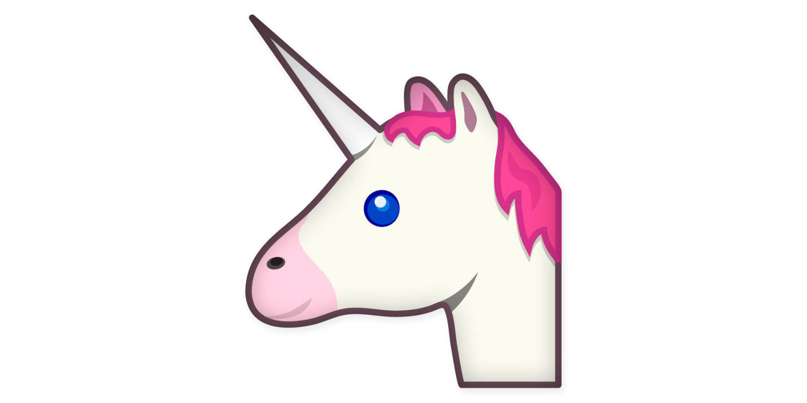
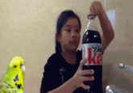

Sass for Fun:
Stories and Lessons
By Una Kravets / @una
@una 
+
LibSass
Recreating contrasted()
See the Pen Contrasted() by Una Kravets (@unax3) on CodePen.
Color Math!
Input:
p {
color: #010203 + #040506;
} 01 + 04 = 05, 02 + 05 = 07, and 03 + 06 = 09
Computed Value:
p {
color: #050709;
}Contrast Settings
$contrast-settings: (
'light-color': #000,
'dark-color': #fff
);$css-colors: (
'aqua': #00ffff,
'aliceblue': #f0f8ff,
'antiquewhite': #faebd7,
'black': #000000,
'blue': #0000ff,
'cyan': #00ffff,
'darkblue': #00008b,
'darkcyan': #008b8b,
'darkgreen': #006400,
'darkturquoise': #00ced1,
'deepskyblue': #00bfff,
'green': #008000,
'lime': #00ff00,
'mediumblue': #0000cd,
'mediumspringgreen': #00fa9a,
'navy': #000080,
'springgreen': #00ff7f,
'teal': #008080,
'midnightblue': #191970,
'dodgerblue': #1e90ff,
'lightseagreen': #20b2aa,
'forestgreen': #228b22,
'seagreen': #2e8b57,
'darkslategray': #2f4f4f,
'darkslategrey': #2f4f4f,
'limegreen': #32cd32,
'mediumseagreen': #3cb371,
'turquoise': #40e0d0,
'royalblue': #4169e1,
'steelblue': #4682b4,
'darkslateblue': #483d8b,
'mediumturquoise': #48d1cc,
'indigo': #4b0082,
'darkolivegreen': #556b2f,
'cadetblue': #5f9ea0,
'cornflowerblue': #6495ed,
'mediumaquamarine': #66cdaa,
'dimgray': #696969,
'dimgrey': #696969,
'slateblue': #6a5acd,
'olivedrab': #6b8e23,
'slategray': #708090,
'slategrey': #708090,
'lightslategray': #778899,
'lightslategrey': #778899,
'mediumslateblue': #7b68ee,
'lawngreen': #7cfc00,
'aquamarine': #7fffd4,
'chartreuse': #7fff00,
'gray': #808080,
'grey': #808080,
'maroon': #800000,
'olive': #808000,
'purple': #800080,
'lightskyblue': #87cefa,
'skyblue': #87ceeb,
'blueviolet': #8a2be2,
'darkmagenta': #8b008b,
'darkred': #8b0000,
'saddlebrown': #8b4513,
'darkseagreen': #8fbc8f,
'lightgreen': #90ee90,
'mediumpurple': #9370db,
'darkviolet': #9400d3,
'palegreen': #98fb98,
'darkorchid': #9932cc,
'yellowgreen': #9acd32,
'sienna': #a0522d,
'brown': #a52a2a,
'darkgray': #a9a9a9,
'darkgrey': #a9a9a9,
'greenyellow': #adff2f,
'lightblue': #add8e6,
'paleturquoise': #afeeee,
'lightsteelblue': #b0c4de,
'powderblue': #b0e0e6,
'firebrick': #b22222,
'darkgoldenrod': #b8860b,
'mediumorchid': #ba55d3,
'rosybrown': #bc8f8f,
'darkkhaki': #bdb76b,
'silver': #c0c0c0,
'mediumvioletred': #c71585,
'indianred': #cd5c5c,
'peru': #cd853f,
'chocolate': #d2691e,
'tan': #d2b48c,
'lightgray': #d3d3d3,
'lightgrey': #d3d3d3,
'thistle': #d8bfd8,
'goldenrod': #daa520,
'orchid': #da70d6,
'palevioletred': #db7093,
'crimson': #dc143c,
'gainsboro': #dcdcdc,
'plum': #dda0dd,
'burlywood': #deb887,
'lightcyan': #e0ffff,
'lavender': #e6e6fa,
'darksalmon': #e9967a,
'palegoldenrod': #eee8aa,
'violet': #ee82ee,
'azure': #f0ffff,
'honeydew': #f0fff0,
'khaki': #f0e68c,
'lightcoral': #f08080,
'sandybrown': #f4a460,
'beige': #f5f5dc,
'mintcream': #f5fffa,
'wheat': #f5deb3,
'whitesmoke': #f5f5f5,
'ghostwhite': #f8f8ff,
'lightgoldenrodyellow': #fafad2,
'linen': #faf0e6,
'salmon': #fa8072,
'oldlace': #fdf5e6,
'bisque': #ffe4c4,
'blanchedalmond': #ffebcd,
'coral': #ff7f50,
'cornsilk': #fff8dc,
'darkorange': #ff8c00,
'deeppink': #ff1493,
'floralwhite': #fffaf0,
'fuchsia': #ff00ff,
'gold': #ffd700,
'hotpink': #ff69b4,
'ivory': #fffff0,
'lavenderblush': #fff0f5,
'lemonchiffon': #fffacd,
'lightpink': #ffb6c1,
'lightsalmon': #ffa07a,
'lightyellow': #ffffe0,
'magenta': #ff00ff,
'mistyrose': #ffe4e1,
'moccasin': #ffe4b5,
'navajowhite': #ffdead,
'orange': #ffa500,
'orangered': #ff4500,
'papayawhip': #ffefd5,
'peachpuff': #ffdab9,
'pink': #ffc0cb,
'red': #ff0000,
'seashell': #fff5ee,
'snow': #fffafa,
'tomato': #ff6347,
'white': #ffffff,
'yellow': #ffff00,
'rebeccapurple': #663399
);Contrasted Mixin
@mixin contrast-me($bg-color) {
@if lightness($bg-color) < 60% {
color: map-get($contrast-settings, 'dark-color');
} @else {
color: map-get($contrast-settings, 'light-color');
}
background-color: $bg-color;
}Contrasted Mixin -- Settings
$contrast-settings: (
'light-color': #000,
'dark-color': #fff,
'light-ratio': 45% // add light-ratio to settings
);Contrasted Mixin
@mixin contrast-me($bg-color) {
@if lightness($bg-color) < map-get($contrast-settings, 'light-ratio') {
color: map-get($contrast-settings, 'dark-color');
} @else {
color: map-get($contrast-settings, 'light-color');
}
background-color: $bg-color;
}Sassy Shapes
@mixin shape($shape, $size, $color){
@if $shape == square {
width: $size;
height: $size;
background-color: $color;
}
}@if $shape == pentagon {
position: relative;
width: $size;
border-width: (25/27)*$size (1/3)*$size 0;
border-style: solid;
border-color: $color transparent;
&:before {
content: "";
position: absolute;
height: 0;
width: 0;
top: (-17/11)*$size;
left: (-1/3)*$size;
border-width: 0 (5/6)*$size (35/54)*$size;
border-style: solid;
border-color: transparent transparent $color;
}
}@include shape(pentagon, 50px, $color7)
See the Pen Sassy CSS Puppy by Una Kravets (@una) on CodePen.
%freckles {
@include shape(circle, 15px, $darkbrown);
margin-top: 285px;
&:before {
@include shape(circle, 15px, $darkbrown);
content: "";
margin: -20px 15px;
}
&:after{
@include shape(circle, 15px, $darkbrown);
content: "";
margin: -20px -15px;
}
}Innovation is taking two things that already exist and putting them together in a new way.
Pixel Art and Lists
This section covers:
- box-shadows
- faux-matrices
- pixel mapping
- dynamically generated lists
CSS Box Shadow
Diamond
Let's Play with Lists!
pixelize()
- Determine size/color of the pixels
- Create empty list to be filled with incoming box shadow data
- Itemize each row to set a y-value (vertical position in the matrix grid)
- Read the n-value (horizontal position in the list) to determine it's x-value
- Determine the y-value of that pixel based on its row
- Read the actual letter (content-value) to determine the color of the pixel
- Append determined values to box-shadow list, ending with ","
- Loop through steps 4-7 for the entire matrix grid
pixelize()
@function pixelize($matrix, $size: 10px, $color: hotpink) {
// length of the entire matrix
$l: length($matrix);
// shadows list we will be outputting
$shadows: '';
// length of an individual line on a matrix
$i: $l;
// read through the all the rows of the list
@for $i from 1 through $l {
// this is a single row
$row: nth($matrix, $i);
@for $j from 1 through length($row){
//itemize each element in that row
$item: nth($row, $j);
// if that item is an x, give it a drop shadow
// square w/background color
// (this is where we're building the shadows list)
@if $item == x{
$shadows: $shadows + ($j*$size) + ' ' + ($i*$size) + ' ' + $color;
} @else{
$shadows: $shadows + ($j*$size) + ' ' + ($i*$size) + ' ' + transparent;
}
// when you get to the end of the row,
// add a comma before the next block of drop shadows
@if not ($j == length($row) and $i == $l) {
$shadows: $shadows + ',';
}
}
}
// return the entire shadow list here
@return unquote($shadows);
}
10px 10px transparent,20px 10px transparent,30px 10px hotpink,40px 10px transparent,50px 10px transparent,10px 20px transparent,20px 20px hotpink,30px 20px transparent,40px 20px hotpink,50px 20px transparent,10px 30px hotpink,20px 30px transparent,30px 30px transparent,40px 30px transparent,50px 30px hotpink,10px 40px transparent,20px 40px hotpink,30px 40px transparent,40px 40px hotpink,50px 40px transparent,10px 50px transparent,20px 50px transparent,30px 50px hotpink,40px 50px transparent,50px 50px transparent
// top row
10px 10px transparent,
20px 10px transparent,
30px 10px hotpink,
40px 10px transparent,
50px 10px transparent,
//second row
10px 20px transparent,
20px 20px hotpink,
30px 20px transparent,
40px 20px hotpink,
50px 20px transparent,
// 3rd row
10px 30px hotpink,
20px 30px transparent,
30px 30px transparent,
40px 30px transparent,
50px 30px hotpink,
// 4th row
10px 40px transparent,
20px 40px hotpink,
30px 40px transparent,
40px 40px hotpink,
50px 40px transparent,
//bottom row
10px 50px transparent,
20px 50px transparent,
30px 50px hotpink,
40px 50px transparent,
50px 50px transparent;
Color Mapping
mushroom: (
(o o o o o k k k k k k o o o o o)
(o o o k k r r r r w w k k o o o)
(o o k w w r r r r w w w w k o o)
(o k w w r r r r r r w w w w k o)
(o k w r r w w w w r r w w w k o)
(k r r r w w w w w w r r r r r k)
(k r r r w w w w w w r r w w r k)
(k w r r w w w w w w r w w w w k)
(k w w r r w w w w r r w w w w k)
(k w w r r r r r r r r r w w r k)
(k w r r k k k k k k k k r r r k)
(o k k k w w k w w k w w k k k o)
(o o k w w w k w w k w w w k o o)
(o o k w w w w w w w w w w k o o)
(o o o k w w w w w w w w k o o o)
(o o o o k k k k k k k k o o o o)
)@if $item == w{
$sh: $sh + ($j*$size) + ' ' + ($i*$size) + ' ' + white;
}
@if $item == k {
$sh: $sh + ($j*$size) + ' ' + ($i*$size) + ' ' + black;
}
@if $item == r {
$sh: $sh + ($j*$size) + ' ' + ($i*$size) + ' ' + red;
}
@if $item == o {
$sh: $sh + ($j*$size) + ' ' + ($i*$size) + ' ' + transparent;
}$pixel-color-map: (
'r' : #f00,
'w': #fff,
'k': #000,
'o': transparent
);@if $item == 'w' {
$sh: $sh + ($j*$size) + ' ' + ($i*$size) + ' ' + map-get($pixel-color-map, 'w');
}
@if $item == 'k' {
$sh: $sh + ($j*$size) + ' ' + ($i*$size) + ' ' + map-get($pixel-color-map, 'k');
}
@if $item == 'r' {
$sh: $sh + ($j*$size) + ' ' + ($i*$size) + ' ' + map-get($pixel-color-map, 'r');
}
@if $item == 'o' {
$sh: $sh + ($j*$size) + ' ' + ($i*$size) + ' ' + map-get($pixel-color-map, 'o');
}Error Proofing
Existing Value?
@if map-has-key($pixel-color-map, $item) {
$sh: $sh + ($j*$size) + ' ' + ($i*$size) + ' ' + map-get($pixel-color-map, $item);
}Add @warn
@if map-has-key($pixel-color-map, $item) {
$sh: $sh + ($j*$size) + ' ' + ($i*$size) + ' ' + map-get($pixel-color-map, $item);
} @else {
@warn 'there is no color specified in "$pixel-color-map" for: "#{$item}"';
}$pixel-art:(
mushroom: (
(o o o o o k k k k k k o o o o o)
(o o o k k r r r r w w k k o o o)
(o o k w w r r r r w w w w k o o)
(o k w w r r r r r r w w w w k o)
(o k w r r w w w w r r w w w k o)
(k r r r w w w w w w r r r r r k)
(k r r r w w w w w w r r w w r k)
(k w r r w w w w w w r w w w w k)
(k w w r r w w w w r r w w w w k)
(k w w r r r r r r r r r w w r k)
(k w r r k k k k k k k k r r r k)
(o k k k w w k w w k w w k k k o)
(o o k w w w k w w k w w w k o o)
(o o k w w w w w w w w w w k o o)
(o o o k w w w w w w w w k o o o)
(o o o o k k k k k k k k o o o o)
),
mario: (
(o o o r r r r r r o o o o)
(o o r r r r r r r r r r o)
(o o t t t p p p k p o o o)
(o t p t p p p p k p p p o)
(o t p t t p p p p k p p p)
(o t t p p p p p k k k k o)
(o o o p p p p p p p p o o)
(o o r r b r r r r o o o o)
(o r r r b r r b r r r r o)
(r r r r b b b b r r r r o)
(p p r b y b b y b r p p o)
(p p p b b b b b b p p p o)
(p p b b b b b b b b p p o)
(o o b b b o o b b b o o o)
(o t t t o o o o t t t o o)
(t t t t o o o o t t t t o)
),
star: (
(o o o o o o o k k o o o o o o o)
(o o o o o o k y y k o o o o o o)
(o o o o o o k y y k o o o o o o)
(o o o o o k y y y y k o o o o o)
(k k k k k k y y y y k k k k k k)
(k y y y y y y y y y y y y y y k)
(o k y y y y k y y k y y y y k o)
(o o k y y y k y y k y y y k o o)
(o o o k y y k y y k y y k o o o)
(o o o k y y y y y y y y k o o o)
(o o k y y y y y y y y y y k o o)
(o o k y y y y y y y y y y k o o)
(o k y y y y y k k y y y y y k o)
(o k y y y k k o o k k y y y k o)
(k y y k k o o o o o o k k y y k)
(k k k o o o o o o o o o o k k k)
)
);Warning: Do Not Try This at Home
and $item !='o'
@function pixelize($matrix, $size){
$l: length($matrix); // length of the entire
$sh: (); // shadows list
$i: $l; // length of the line
// read through the length of the matrix and decide on the box shadow color and position
@for $i from 1 through $l{
$row: nth($matrix,$i); //
@for $j from 1 through length($row){
$item: nth($row,$j);
@if map-has-key($pixel-color-map, $item) and $item !='o' {
$sh: $sh, ($j*$size) ($i*$size) map-get($pixel-color-map, $item);
} @else {
@warn 'there is no color specified in "$pixel-color-map" for: "#{$item}"';
}
}
}
@return unquote($sh);
}Spread the Sass Love
It All Started with Emojis
More Sass for Fun Inspiration
John Brown
See the Pen Day 082: As A Shoe, I Agree by John Brown (@ThisIsJohnBrown) on CodePen.
Ana Tudor
See the Pen Pure CSS pentagonal torus (animated) by Ana Tudor (@thebabydino) on CodePen.
Gregor Adams
See the Pen #7 pop fractal art | CSS by Gregor Adams (@pixelass) on CodePen.
Codepen Creative Challenges
A Lonely Square
Sass but not Sass
Sass Director
Sass Director -- Input Manifest
@import "utils/variables";
@import "utils/functions";
@import "utils/mixins";
@import "utils/placeholders";
@import "base/reset";
@import "base/typography";
@import "layout/navigation";
@import "layout/grid";
@import "layout/header";
@import "layout/footer";
@import "layout/sidebar";
@import "layout/forms";
@import "components/buttons";
@import "components/carousel";
@import "components/cover";
@import "components/dropdown";
@import "pages/home";
@import "pages/contact";
@import "themes/theme";
@import "themes/admin";Sass Director -- Output Shell
mkdir utils;cd utils;touch _variables.scss;touch _functions.scss;touch _mixins.scss;touch _placeholders.scss;cd ../;mkdir base;cd base;touch _reset.scss;touch _typography.scss;cd ../;mkdir layout;cd layout;touch _navigation.scss;touch _grid.scss;touch _header.scss;touch _footer.scss;touch _sidebar.scss;touch _forms.scss;cd ../;mkdir components;cd components;touch _buttons.scss;touch _carousel.scss;touch _cover.scss;touch _dropdown.scss;cd ../;mkdir pages;cd pages;touch _home.scss;touch _contact.scss;cd ../;mkdir themes;cd themes;touch _theme.scss;touch _admin.scss;cd ../;cd ../;Organization-Driven Development
// Base styles -- these output no code
@import 'base/reset';
@import 'base/vars/color';
@import 'base/vars/grid';
@import 'base/vars/type';
@import 'base/helpers/mixins';
@import 'base/helpers/functions';
@import 'base/helpers/extends';
// Layout elements affecting the page
@import 'theme/grid';
@import 'theme/color';
@import 'theme/type';
// Regions of your page -- repeated & modular
@import 'regions/nav';
@import 'regions/header';
@import 'regions/footer';
@import 'regions/sidebar';
// Modules -- elements that are repeated
@import 'modules/buttons';
// Components -- compound modules
@import 'components/forms';
// Unique pages -- Views that aren't reused
@import 'pages/home';
@import 'pages/contact';
// Everyone messes up sometimes -- here's the to-do that didn't quiet have a spot yet
@import 'to-do';Open Source All the Things
In Review:
- Make things on the side
- You'll have fun
- You'll learn more than you expect
- Share your knowledge
- Play, practice, repeat